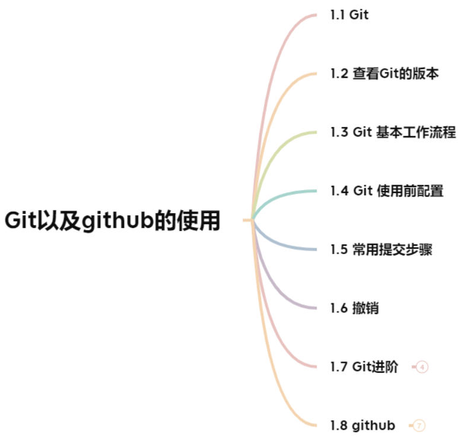

Git以及Github的使用¶

1.1 Git¶
1.2 查看Git的版本¶
1.3 Git 基本工作流程¶
| git仓库 | 暂存区 | 工作目录 |
|---|---|---|
| 用于存放提交记录 | 临时存放被修改文件 | 被Git管理的项目目录 |
| ## 1.4 Git 使用前配置 | ||
1.5 常用提交步骤¶
1 git init # 初始化git仓库
2 git status # 查看文件状态
3 git add 文件列表 # 追踪文件
4 git commit -m “提交信息” # 向仓库中提交代码(全部文件)
vs： git commit -m "提交信息" 文件 # 提交某个文件
5 git log # 显示所有提交记录
vs： git log --pretty=oneline # 一行显示版本信息
补充：
git log lfa380b5O2a0Ob82bfc8d84c5ab5el5b8fbf7dac # 会显示所有关于这个id以及之前的修改记录
git log lfa380b5O2a0Ob82bfc8d84c5ab5el5b8fbf7dac -1 # 加上-1参数表示我们只想看到一行记录
而如果想要查看这条提交记录具体修改了什么内容，可以在命令中加入p参数，命令如下:
git log Ifa380b502a00b82bfc8d84c5ab5el5b8fbf7dac -1 -p
6 git reset --hard 版本id # 回退版本
7 git reflog # 查看所有版本信息
8 git diff # 表示未使用add命令时的修改
这样可以查看到所有文件的更改内容，
如果你只想查看MainActivity.java这个文件的更改内容，
可以使用如下命令：
git diff app/src/main/java/com/example/providertest/MainActivity.java
vs：git log 表示最近的改变，git reflog可以看到所有的改变
如果文件未被跟踪,即没有使用git add这个命令时,文
件为红色,如果使用这个命令,则文件变为绿色.
Administrator@E3J6CI1HV76DS4U MINGW32 /d/360MoveData/Users/Administrator/Desktop/test
$ git init
Initialized empty Git repository in D:/360MoveData/Users/Administrator/Desktop/test/.git/
Administrator@E3J6CI1HV76DS4U MINGW32 /d/360MoveData/Users/Administrator/Desktop/test (master)
$ git status
On branch master
No commits yet
Untracked files:
(use "git add <file>..." to include in what will be committed)
index.html
nothing added to commit but untracked files present (use "git add" to track)
Administrator@E3J6CI1HV76DS4U MINGW32 /d/360MoveData/Users/Administrator/Desktop/test (master)
$ git add index.html
Administrator@E3J6CI1HV76DS4U MINGW32 /d/360MoveData/Users/Administrator/Desktop/test (master)
$ git status
On branch master
No commits yet
Changes to be committed:
(use "git rm --cached <file>..." to unstage)
new file: index.html
Administrator@E3J6CI1HV76DS4U MINGW32 /d/360MoveData/Users/Administrator/Desktop/test (master)
$ git commit -m 第一次提交
[master (root-commit) 23db606] 第一次提交
1 file changed, 0 insertions(+), 0 deletions(-)
create mode 100644 index.html
1.6 撤销¶
1 git checkout 文件
不过这种撤销方式只适用于那些还没有执行过add命令
的文件,如果某个文件已经被添加过了，这种方式就无
法撤销其更改的内容.
这种情况我们应该先对其取消添加，然后才可以撤回提交。
取消添加使用的是reset命令，用法如下所示：
git reset HEAD app/src/main/java/com/example/providertest/MainActivity.java
然后再运行一遍git status命令，你就会发现MainActivity.java这个文件重新变回了未添加状态，此时就可以使用checkout命令来将修改的内容进行撤销了。
2 用暂存区中的文件覆盖工作目录中的文件： git checkout 文件
应用场景:如果开发过程中不满意当前的内容,想要后悔药,那么可以
使用这个命令从暂存区取相应的文件来恢复,使用后文件的状态依然
为绿色.
3 将文件从暂存区中删除： git rm --cached 文件
应用场景:开发过程中,不是每个文件都是有必要交给git管
理的,使用这个命令可以从暂存区删除没用的文件,不交
给git管理,此时文件在工作目录依然存在,只是没在
暂存区而已.
4 将 git 仓库中指定的更新记录恢复出来，并且覆盖暂存区和工
作目录：git reset --hard commitID
应用场景:开发过程中,如果想要利用某次记录覆盖暂存区和工
作目录,则可以使用 上面那个命令.
1.7 Git进阶¶
1.7.1 分支¶
1.7.2 分支细分¶
主分支（master）：第一次向 git 仓库中提交更新记录时自动
产生的一个分支。
开发分支（develop）：作为开发的分支，基于 master 分支创建。
功能分支（feature）：作为开发具体功能的分支，基于开发分支创建
功能分支 -> 开发分支 -> 主分支
解析:实际开发中,主分支一般来发布源码之类,要保持稳定,所以
就出现了开发分支,当开发分支弄好后在合并到主分支.
功能分支是作为开发具体功能的分支,为了保持开发分支
的稳定,当功能分支弄好后在合并到开发分支.所以路线就是
功能分支 -> 开发分支 -> 主分支
1.7.3 分支命令¶
git branch # 查看分支
git branch 分支名称 # 创建分支
git checkout 分支名称 # 切换分支
注意:在切换分支的时候一定要保证当前的内容处于提
交状态,即有使用git commit这个命令,否则切换到其
他分支的时候会把切换前的分支内容带过去,这不是我们想要的
git merge 来源分支 # 合并分支
git branch -d 分支名称` # 删除分支（分支被合并后才允许删除）（-D 强制删除）
注意:如果某分支没有合并，则该分支不可以直接被删除，解决办法就是把小d改为大D即可。
1.7.4 暂时保存更改¶
应用场景(分支临时切换);开发过程中，如果老板说
以前的内容存在bug，那么你得切换分支去修改，
但你当前的分支尚未完成，不想提交上去.即不要
git commit这个命令的需求，但是又不想把切换前
的分支内容带过去，此时可以利用git stash(存储
临时改动)这个命令，这个命令的作用就是把你当
前分支的内容剪切到剪贴板上，然后就可以切换
分支了，虽然没有git commit这个命令，但状态已
处于工作清空状态（即暂存区跟工作目录没有内容了）。
当处理好bug之后切换到原来的分支，使用
git stash pop(恢复改动)这个命令从剪贴板复制过
来，此时又恢复之前的状态了。
1.8 github¶
在版本控制系统中，大约90%的操作都是在本地
仓库中进行的：暂存，提交，查看状态或者历史
记录等等。除此之外，如果仅仅只有你一个人在
这个项目里工作，你永远没有机会需要设置一个远程仓库。
只有当你需要和你的开发团队共享数据时，设置一
个远程仓库才有意义。你可以把它想象成一个
“文件管理服务器”，利用这个服务器可以与开发
团队的其他成员进行数据交换。
1.8.1 github解释名词¶
仓库(Repository)
有多少个开源项目，就有多少个仓库
收藏(Star)
即收藏人数
fork(克隆)
复制项目到自己的仓库
pull request
请求把改变的内容更改到被克隆的那个远程仓库中
watch(关注)
通知你关注项目的改变
issue(事务卡片)
发现bug，把bug通知上去，讨论协商
1.8.2 多人协作开发流程¶

 跨团队开发
跨团队开发

1.8.2.1 合作流程¶
同队开发
1.首先A方创建远程仓库，将本地仓库推送到远程仓库
（我们本地仓库的版本必须大于远程仓库的版本，否则push失败。），
采用git push 远程仓库地址 分支名称。
git push https://github.com/yxjgithub-png/git-demo.git master # 将master分支推送到远程仓库。但是这里地址麻烦，可以采用步骤2添加别名
2. git remote add 远程仓库地址别名(可以自定义,一般为origin) 远程仓库地址 # (查看当前远程地址的别名git remote -v )
git remote add origin https://github.com/yxjgithub-png/git-demo.git # 如果不想使用地址形式，可以采用别名来代替。如果想直接使用git push，则可以采用步骤3
3. git push -u 远程仓库地址别名 分支名称
git push origin master # 推送远程分支
git push -u origin master # -u 记住推送地址及分支，下次推送只需要输入git push即可.B方想加入团队进行开发，则需要步骤4.
解析：第一次输入需要用户名和密码，以后不用，window系统会帮助我们记住用户名和密码，在那个控制面板的凭据管理器中。
4.git clone 仓库地址
git clone 远程仓库地。B方想推送自己修改的内容，则需要步骤5
效果:1.下载内容到本地 2.克隆别人远程仓库的别名 3.初始化仓库
当我们需要clone后想把内容推送到别人的远程仓库时，不可以直接推送，而是需要别人在相应的远程仓库的settings里面操作，填写邀请队友的账号。当我们用git clone的时候，不仅将对方的东西复制过来，而且连对方远程仓库的别名也复制过来。
5. git push 远程仓库地址 推送的分支
git push origin master # B方想把内容推送给A方，然后A方可以采用步骤6进行版本的更新
git push <远程主机名> <本地分支名>:<远程分支名>
注意，分支推送顺序的写法是<来源地>:<目的地>，所以git pull是<远程分支>:<本地分支>，而git push是<本地分支>:<远程分支>。如果省略远程分支名，则表示将本地分支推送与之存在”追踪关系”的远程分支(通常两者同名)，如果该远程分支不存在，则会被新建。
6.git pull
拉取远程仓库中最新的版本：git pull 远程仓库地址 远程地址分支名称
git pull origin master # 拉取origin主机的master分支，与本地当前分支合并
比如，要取回origin主机的next分支，与本地的master分支合并，需要写成下面这样 git pull origin next:master
如果远程分支(next)要与当前分支合并，则冒号后面的部分可以省略。上面命令可以简写为：git pull origin next
git clone 跟 git pull的区别
git clone是在没有本地仓库的基础上clone别人的东西，而git pull则是在有本地仓库的基础上拉取代码到本地。git clone
只是第一次参与开发时用，以后都是用git pull命令
解决冲突
在多人同时开发一个项目时，如果两个人修改了同一个文件的同一个地方，就会发生冲突。冲突需要人为解决。
先把远程仓库pull下来，然后删除冲突的标记，再做相应的修改即可。然后git add，git commit，git push上去。
跨团队协作
1. 程序员 C fork仓库：把对方远程仓库的内容复制到自己的远程仓库
2. 程序员 C 将远程仓库克隆在本地进行修改
3. 程序员 C 将仓库推送到自己的远程仓库
4. 程序员 C如果想要把修改内容发给对方，则需要点击pull request命令
5. 然后等待原远程仓库作者审核
6. 原远程仓库作者合并代码即可
1.8.3 ssh免登陆¶
生成秘钥：ssh-keygen
秘钥存储目录：C:\Users\用户\\.ssh
公钥名称：id_rsa.pub
私钥名称：id_rsa
解析：使用ssh-keygen命令，然后生成秘钥，私钥
保存在自己的电脑中，公钥发布在自己的远程仓库
中（在settings中找到设置ssh的地方，将公钥的
内容复制到那里），然后复制相应仓库的ssh地址，
然后正常操作就可以实现免密码登录。
1.8.4 GIT忽略清单¶
1.8.5 bug¶
idea提交项目到github
提交到远程库错误:Push to origin/master was rejected
解决方案：git pull origin(远程仓库的地址) master --allow-unrelated-histories
1.8.6 Github搜索技巧¶
in:name Vue # 搜索项目名包含Vue的项目
in:name Vue stars:>5000 # 搜索Vue项目的star数大于5000
in:name Vue stars:>5000 forks:>5000 # 搜索Vue项目的star数大于5000 并且 forks:>5000
in:readme Vue # 搜索README.md里面包含Vue的项目
in:descrition Vue # 搜索项目描述包含Vue的项目
language:java # 搜索语言为java的项目
pushed:>2020-01-02 # 搜索项目最后更新时间大于2020-01-02的项目
1.9 图片总结¶